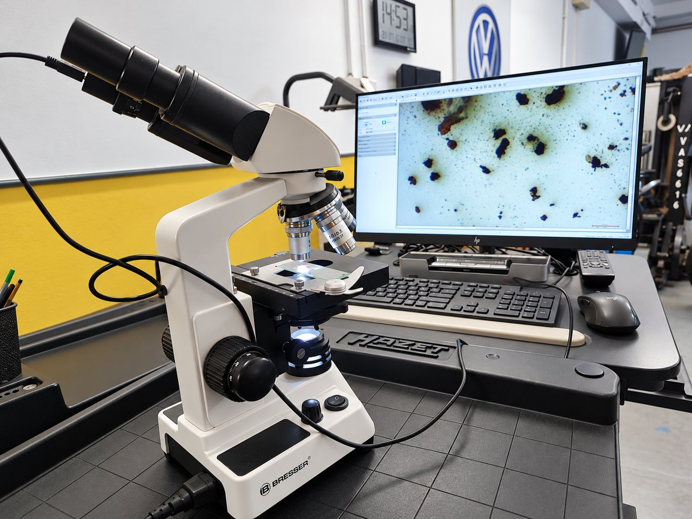
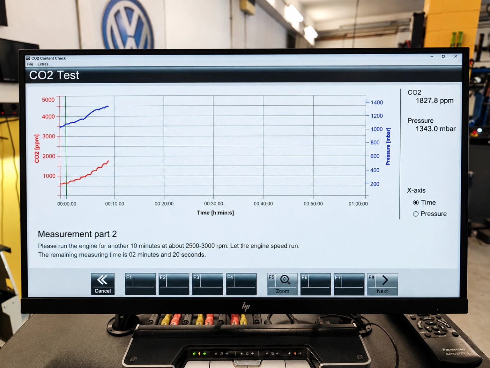
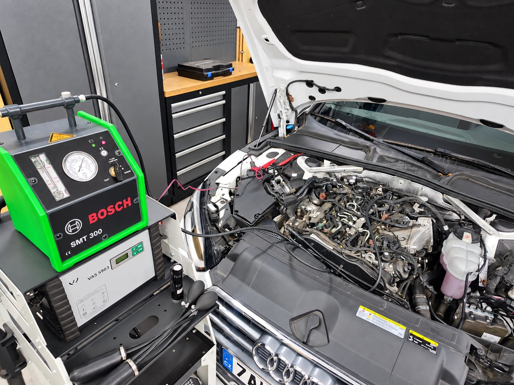

Spezialdiagnose

Bei der Ursachenfindung ist es wichtig, Fahrzeugsymptome mit konkreten Messergebnissen zu verbinden. In der Spezialdiagnose nutzen wir gezielte Prüfungen als Grundlage für das weitere Reparaturverfahren. Den Prüfumfang wählen wir nach Fahrzeugkonstruktion und beschriebenen Problemen.
Methoden nach Prüfbedarf
Die Einführungsgrafik und Texte in den Originalfotos bleiben in ihrer ursprünglichen Sprache. Das Messprotokoll als PDF ist auf Englisch.
Endoskopie
Endoskopische Kontrolle von Motoren und schwer zugänglichen Bauteilen
Die Endoskopie ermöglicht die Betrachtung von Innenräumen und Bauteilen, die bei üblicher Sichtprüfung unzugänglich sind. Wir nutzen ein Kamerasystem, dessen Sondenblickrichtung sich über 360° steuern lässt. Je nach Fahrzeugkonstruktion kann dies den Demontageumfang für eine erste Fehlerbeurteilung verringern.


Was lässt sich mit dem Endoskop prüfen?
- Zugängliche Bereiche von Brennräumen, Kolbenböden und Zylinderwänden.
- Sichtbare Ablagerungen und Spuren mechanischer Schäden.
- Zugängliche Bereiche von Ansaug- und Abgassystem.
- Die innere Struktur von Katalysator oder Partikelfilter, sofern die Fahrzeugkonstruktion das Einführen der Sonde und die nötige Sicht ermöglicht.
- Weitere schwer zugängliche Stellen je nach Fehlerbild.
Der Prüfumfang hängt stets von der Konstruktion des Motors oder Bauteils, verfügbaren Zugangsöffnungen und der sicheren Sondenführung ab.
Wie bewerten wir den Befund?
Das Endoskopbild beurteilen wir zusammen mit den Fehlersymptomen und Ergebnissen weiterer Diagnoseprüfungen. Es unterstützt die Wahl des nächsten Schritts und die Entscheidung, ob eine genauere Prüfung oder Demontage nötig ist.
Die Endoskopie zeigt den Zustand sichtbarer Oberflächen. Das Bild allein bestätigt weder die Dichtheit des Brennraums noch die Funktionswirksamkeit eines Katalysators oder Partikelfilters. Je nach Befund ergänzen wir die Kontrolle daher durch weitere Messungen.
Nutzen für den Kunden
Eine gezielte Sichtprüfung liefert eine konkrete Grundlage zur Erklärung des Befunds und Planung der Reparatur. Ist die Stelle mit der Sonde erreichbar, kann sie unnötiges Zerlegen von Bauteilen vermeiden helfen.
Mikroskopische Untersuchung von Betriebsflüssigkeiten
Mikroskopische Untersuchung von Betriebsflüssigkeiten
Bei der mikroskopischen Untersuchung von Betriebsflüssigkeiten beurteilen wir Vorhandensein und Aussehen fester Partikel und Verunreinigungen. Den Befund bewerten wir anhand von Flüssigkeitsart, Entnahmestelle und Fehlersymptomen. Die Prüfung ist eine ergänzende Grundlage für die weitere Diagnose.
Praxisbeispiel: Untersuchung von gebrauchtem Motoröl eines 1.4 TSI


Das Foto zeigt die Untersuchung einer Probe gebrauchten Motoröls mit einem Mikroskop mit digitaler Anzeige. Wir betrachten Aussehen und Vorkommen beobachteter fester Partikel und Verunreinigungen.
Den Befund beurteilen wir zusammen mit den Betriebsproblemen und weiteren Prüfergebnissen. Partikel allein reichen nicht zur eindeutigen Bestimmung der Fehlerursache aus.
Das mikroskopische Bild allein erlaubt keine zuverlässige Bestimmung der chemischen Zusammensetzung oder genauen Herkunft der Partikel. Die mikroskopische Untersuchung ersetzt keine Laboranalyse der Flüssigkeit.
CO₂-Messung
Diagnose von Verbrennungsgasen im Kühlsystem
Wir nutzen das Gerät AVL DiTEST VAS 531 009. Es misst den Kohlendioxidgehalt (CO₂) im Ausgleichsbehälter des Kühlsystems und zeichnet gleichzeitig den Druckverlauf auf. Ein erhöhter CO₂-Gehalt kann auf Verbrennungsgase im Kühlkreislauf hindeuten.

Wann ist die Messung sinnvoll?
Bei wiederholtem Kühlmittelverlust, ungewöhnlichem Druckaufbau oder Motorüberhitzung kann die CO₂-Messung Teil der Diagnose sein. Diese Symptome allein bestätigen jedoch keine eindringenden Verbrennungsgase. Die Eignung prüfen wir nach Fahrzeug und Ergebnissen der Vorprüfung.
Wie erfolgt die Prüfung?
Wir schließen das Gerät über einen passenden Adapter an den Ausgleichsbehälter an. Während der Prüfung verfolgen wir CO₂- und Druckwerte über die Zeit. Verfahren und Bedingungen richten sich nach den Vorgaben von Fahrzeug- und Gerätehersteller. Das Messprogramm erstellt ein Protokoll mit Werten und grafischem Verlauf.
Das Gerät ermöglicht Prüfungen bei kaltem und warmem Motor. Die konkreten Prüfbedingungen wählen wir nach dem vorgeschriebenen Verfahren und den Umständen, unter denen der Fehler auftritt.


Wie bewerten wir das Ergebnis?
Die Messung liefert eine Grundlage für die weitere Diagnose, bestimmt allein jedoch kein konkretes defektes Bauteil. Ein erhöhter CO₂-Gehalt bedeutet nicht automatisch, dass die Zylinderkopfdichtung defekt ist. Je nach Motorkonstruktion kann die Undichtigkeit auch mit dem System der Abgasrückführung (AGR/EGR) zusammenhängen. Deshalb bewerten wir die Ergebnisse zusammen mit weiteren Prüfungen, um die Reparatur auf die nachgewiesene Ursache auszurichten. Auch ein Ergebnis ohne erhöhtes CO₂ bestätigt nicht die Fehlerfreiheit des gesamten Kühlsystems.
Beispiel eines Messprotokolls
Beim beigefügten Prüfprotokoll eines Volkswagen Multivan bewertete die Software das Ergebnis mit OK. Es handelt sich um das Ergebnis einer konkreten Messung unter den Bedingungen dieser Prüfung, nicht um eine allgemeine Bestätigung der Fehlerfreiheit des Fahrzeugs oder des gesamten Kühlsystems.

Rauchdiagnose
Rauchdiagnose – gezielte Lecksuche
Undichtigkeiten in Fahrzeugsystemen können Betriebsprobleme, fehlerhaften Motorlauf oder störendes Pfeifen und Windgeräusche verursachen. Mit dem Rauchtester Bosch SMT 300 suchen wir Leckstellen, die bei einer üblichen Sichtprüfung möglicherweise nicht erkennbar sind.



Was prüfen wir?
- Ansaugsystem – Undichtigkeiten an Leitungen, Schläuchen, Verbindungen und Dichtungen, durch die unerwünschte Nebenluft eintreten kann.
- Unterdrucksystem – Undichtigkeiten an Unterdruckleitungen und angeschlossenen Komponenten entsprechend der Fahrzeugkonstruktion.
- Abgasanlage – Lecks an Verbindungen, Dichtungen und weiteren zugänglichen Bereichen.
- Tankentlüftungs- und Kraftstoffdampfrückhaltesystem (EVAP) – Undichtigkeiten an Leitungen, Verbindungen und Systemkomponenten.
- Dichtungen von Fenstern, Türen und weiteren Karosserieöffnungen – unerwünschte Luftströmungen, die mit Pfeifen, Zugluft oder erhöhten Windgeräuschen im Innenraum zusammenhängen können.
Wie erfolgt die Prüfung?
Bei geeigneten geschlossenen Systemen leiten wir Diagnoserauch in den Prüfkreis ein und beobachten, ob er austritt. Sichtbarer Austritt hilft, die Leckstelle zu lokalisieren und die Reparatur gezielt darauf auszurichten.

Bei der Prüfung von Karosseriedichtungen beobachten wir Änderungen der Rauchströmung an Fenstern, Türen und Dichtspalten. So lassen sich Luftdurchtritte erkennen, die Fahrgeräusche verursachen können.
Anschluss und Prüfbedingungen wählen wir nach Fahrzeug, geprüftem System und Herstellervorgaben. Bei Kraftstoffdampfsystemen nutzen wir das vorgeschriebene Prüfmedium und Verfahren.
Wie bewerten wir das Ergebnis?
Den Befund beurteilen wir zusammen mit den Fehlersymptomen und weiteren Prüfungen. Die Rauchprüfung lokalisiert eine Undichtigkeit; deren Einfluss auf Fahrzeugfunktion oder Innenraumgeräusche prüfen wir durch weitere Diagnose und gegebenenfalls eine Probefahrt.
Nutzen für den Kunden
Die genauere Lokalisierung von Lecks hilft, unnötige Demontage und den Teiletausch ohne nachgewiesene Ursache zu vermeiden. Das Ergebnis liefert eine verständliche Grundlage zur Fehlererklärung und Planung der Reparatur.
UV-Lecksuche
Öl- und Kühlmittellecks mit UV-Diagnose finden
Kleine Undichtigkeiten können sich nur durch langsames Ausschwitzen zeigen. Austretende Flüssigkeit kann sich zudem auf Bauteiloberflächen verteilen; sichtbare Verschmutzung entspricht daher nicht immer der eigentlichen Leckstelle. UV-Diagnose hilft, die Quelle genauer zu lokalisieren.

Prüfung auf Motoröllecks
Zur Suche nach Undichtigkeiten am Motor verwenden wir den Fluoreszenzzusatz G 052 940 A1 und die UV-Lampe VAS 231 005. Der Zusatz vermischt sich mit dem Motoröl und ermöglicht es, Austrittsstelle und Verlauf einer Leckage unter UV-Licht zu verfolgen.
Ein größeres Leck kann bereits bei laufendem Motor in der Werkstatt sichtbar werden. Bei geringem Ausschwitzen ist möglicherweise zunächst eine Fahrt nötig. Soweit der technische Zustand es zulässt, nutzt der Kunde das Fahrzeug nach der Zugabe weiter und kehrt zur vereinbarten Kontrolle zurück. Anschließend prüfen wir verdächtige Bereiche mit der UV-Lampe und bewerten die Spuren.
Die Verwendung des Zusatzes erfordert nicht zwangsläufig einen außerplanmäßigen Motorölwechsel. Wir richten uns stets nach den jeweiligen Herstellervorgaben und dem technischen Zustand des konkreten Fahrzeugs.
Prüfung auf Kühlmittellecks
Dieselbe UV-Lampe lässt sich auch zur Kühlmittellecksuche nutzen. Dafür wird ein separater Fluoreszenzzusatz für Kühlsysteme verwendet, dessen Eignung für das konkrete Kühlmittel und Fahrzeug geprüft werden muss.
Unter UV-Licht lassen sich dann etwa an Schlauchverbindungen, Kühler, Wasserpumpe und anderen zugänglichen Bereichen des Kühlkreislaufs Leckspuren suchen. Der oben genannte Zusatz G 052 940 A1 ist für die Motoröl-Lecksuche bestimmt.
Gezielte Grundlage für die Reparatur
Den Befund bewerten wir im Zusammenhang mit Fehlersymptomen und weiteren Prüfungen. Das Auffinden der tatsächlichen Leckquelle hilft, den Reparaturumfang zu bestimmen und unnötige Demontage oder Teilewechsel ohne nachgewiesene Ursache zu vermeiden.
Prüftermin vereinbaren
Beschreiben Sie bei der Terminvereinbarung, unter welchen Bedingungen die Probleme auftreten und ob kürzlich am Kühlsystem oder Motor gearbeitet wurde. Darauf basierend schlagen wir einen geeigneten Diagnoseumfang vor.